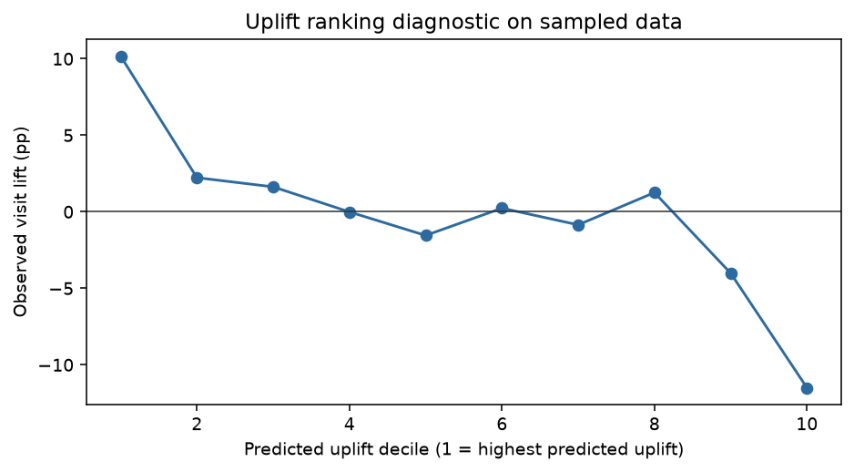

决策问题：在广告预算有限时，哪些用户更可能因为处理而增加访问？总体投放效果是否足以支持扩量？
广告团队面对的不是“谁更容易转化”，而是“谁会因为广告而额外转化”。如果只训练转化预测模型，模型可能把原本就会访问的用户排在前面，导致预算浪费和广告疲劳。这个项目因此把预测目标从 propensity 改成 uplift。
Criteo Uplift Prediction Dataset 是广告 uplift 建模的公开基准，字段同时包含匿名用户特征、treatment、visit、conversion 和 exposure。它比普通广告点击数据更适合研究增量，因为 treatment 和结果变量在同一张表中，可以把“预测谁会转化”和“预测谁会因广告改变行为”区分开。
来源：Criteo AI Lab 数据说明。抽样规则保存在 sample_metadata.json。
| 指标 | 定义 | 业务含义 |
|---|---|---|
| Visit rate | visit / rows | 广告带来的访问增量 |
| Conversion rate | conversion / rows | 最终转化增量 |
| Exposure rate | exposure / rows | 实际曝光状态，不等于利润 |
| Uplift | P(Y|x,t=1)-P(Y|x,t=0) | 同一用户接受与不接受处理的预测差异 |
抽样脚本固定 50 个行索引位置，每个位置取 100 行，去重后保留 5,000 行。样本处理比例约 84%，与官方数据处理比例接近；但抽样并非完整随机抽样，因此本项目不把样本结果写成全量估计。
先按 treatment 分组计算 visit、conversion 和 exposure 率，再使用两比例差异和近似 95% 区间，先回答“平均上有没有信号”，不急于上模型。
直接训练一个转化预测模型优化的是 P(Y|X)，不能识别处理增量。本项目分别在处理组和控制组训练逻辑回归，估计：
predicted uplift = P(visit | X, treatment=1) - P(visit | X, treatment=0)
再按预测 uplift 分十组，比较每组真实处理组与控制组的访问差异。由于样本只有 5,000 行且转化稀疏，分层结果只作为下一轮随机实验的候选排序。
| 结果变量 | 处理组 | 控制组 | 差异 | 近似 95% 区间 |
|---|---|---|---|---|
| Visit | 4.40% | 3.88% | +0.53 pp | [-0.94, +2.00] pp |
| Conversion | 0.191% | 0.125% | +0.065 pp | [-0.213, +0.344] pp |
| Exposure | 3.74% | 0% | +3.74 pp | 字段定义差异 |
当前样本不能确认访问或转化提升。T-learner 分层中，最高预测 uplift 的前 20% 观察到正向访问差异，最低分层观察到负向差异；但分层波动明显，必须用全量数据和独立实验验证。
